VCS Implementation Using GitHub
We will use following commands in the tour
Create a new repository on the command line
- - git init
- - git add .
- - git commit -m "First Commit"
- - git remote add origin https://github.com/ammarshaiq004/mobile_computing_vcs.git
- - git push -u origin master
Push an existing repository from command line
- - git remote add origin https://github.com/ammarshaiq004/mobile_computing_vcs.git
- - git branch -m master
- - git push -u origin master
- Make a new repository in your github account
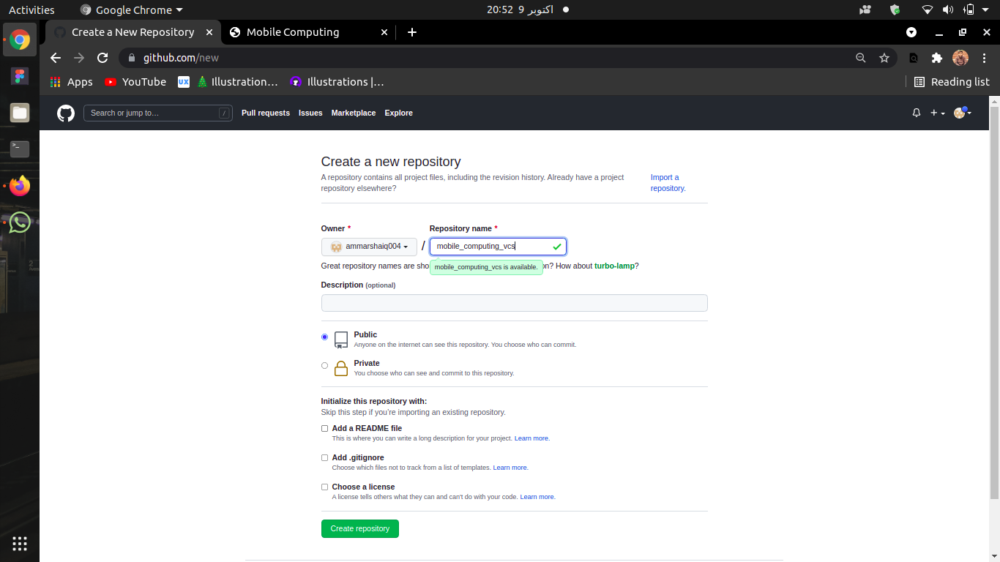
- Create a folder on your PC locally
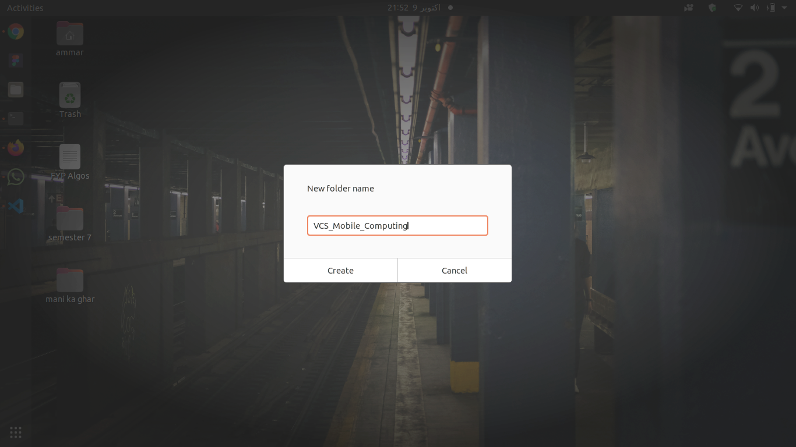
- Open VS Code and initialize git here using following command
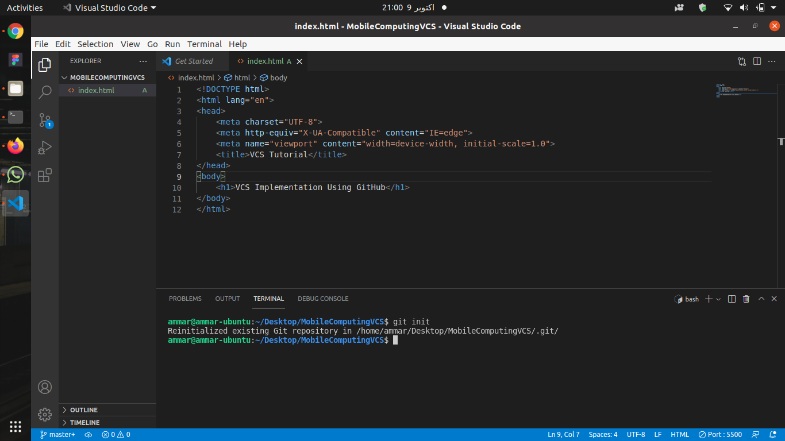
- Use git add . command to add git
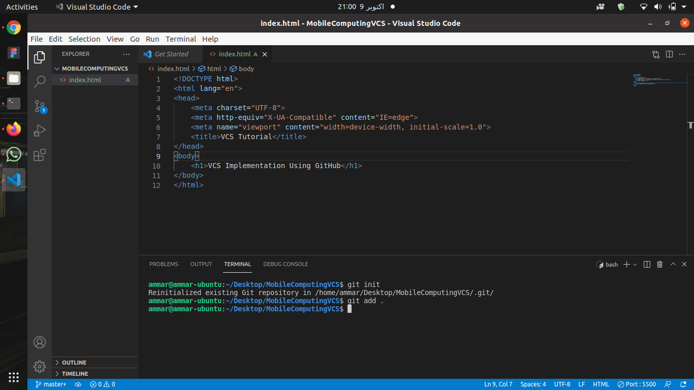
- Use commit command with proper name i.e initialization
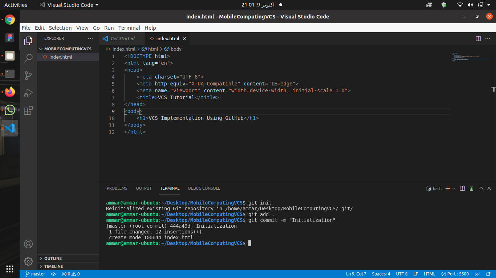
- Now its time to remotely add! So, enter by copying
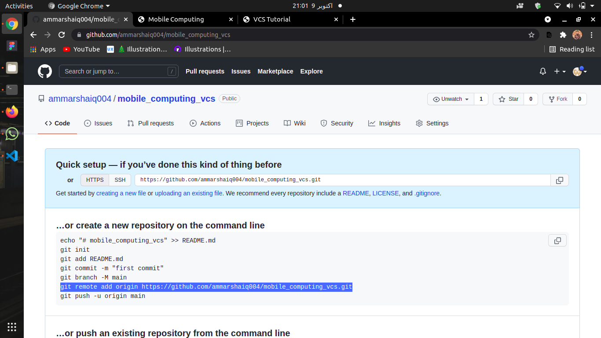
- Paste link in terminal add get your git folder with all files on your git repository
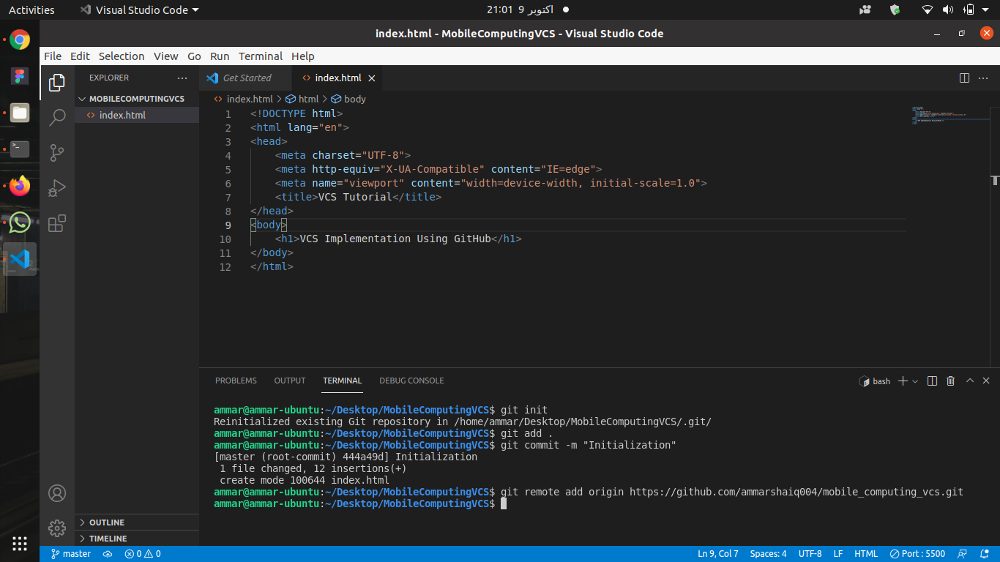
- Finally you are allowed to push your code in your remote repository. So, push it
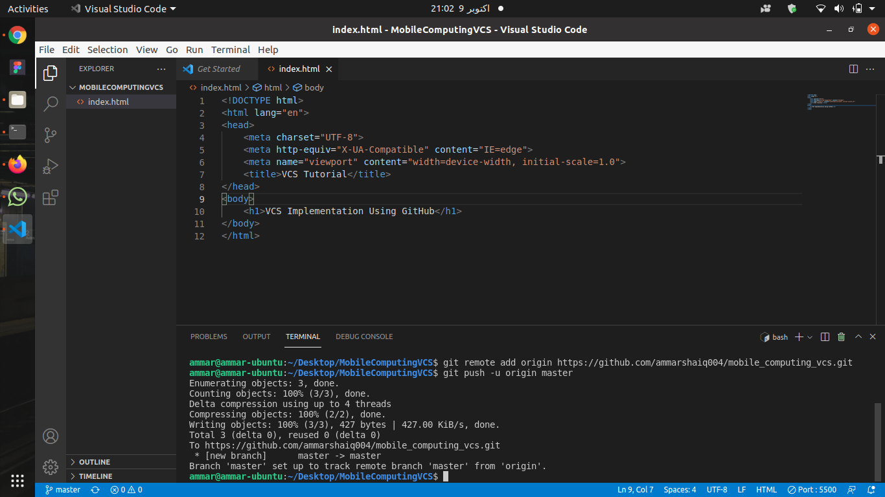
- Worry about pushing next commit after some changes? Here is it
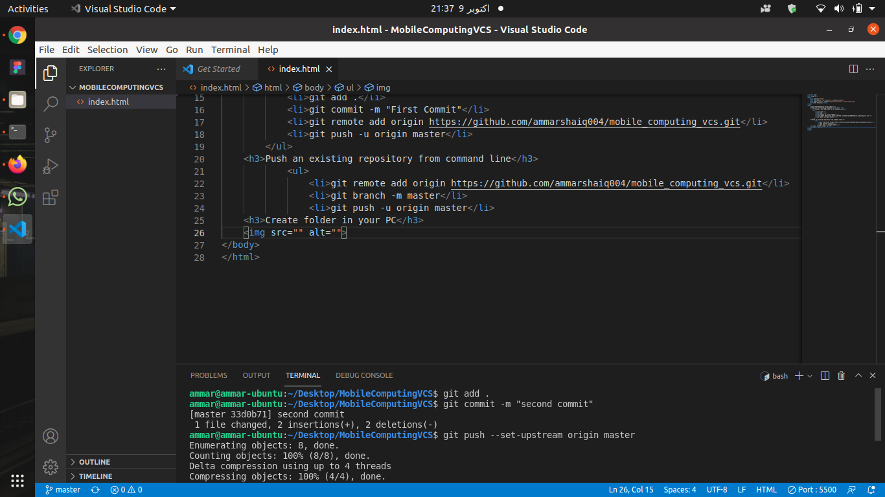
- Want to see all commits? See your git commit section.
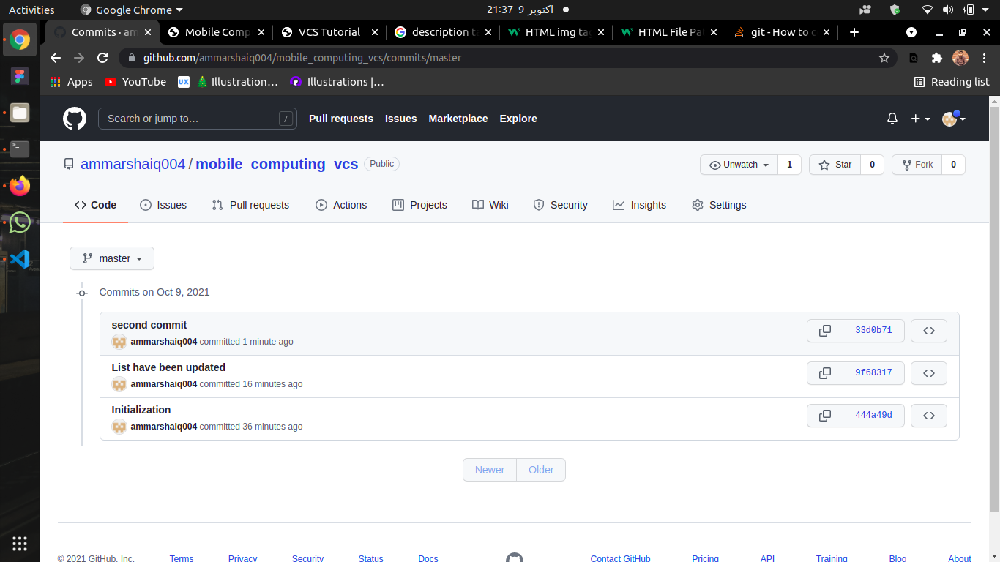
- If you want to publsih your page over git, Stay here! Open Settings.
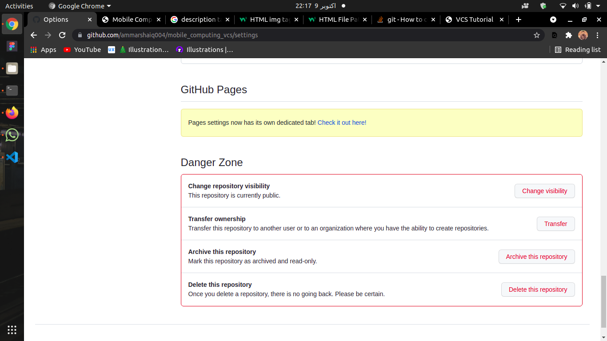
- Here is link of your page, and the option should be master not none.
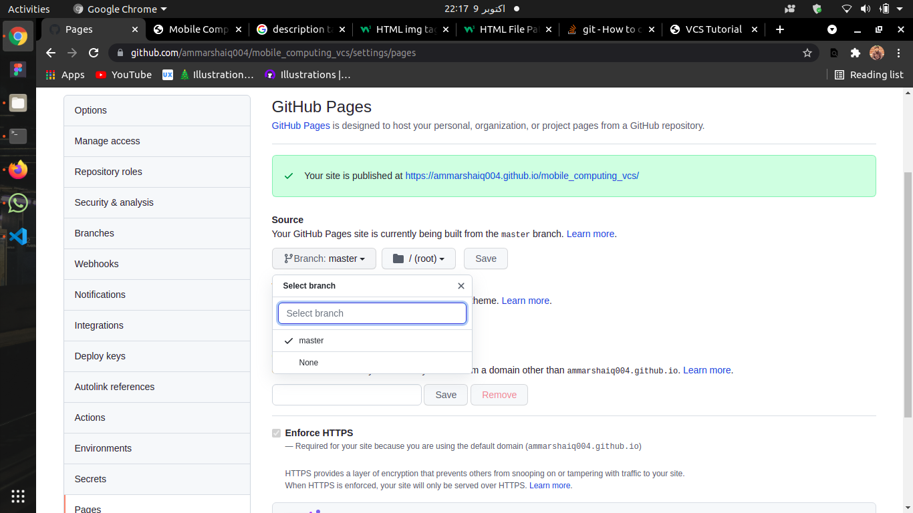